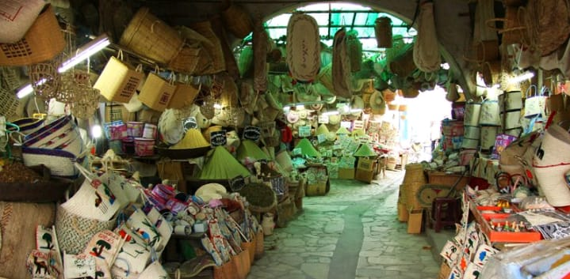
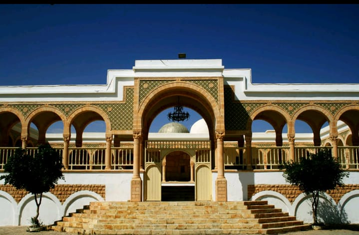
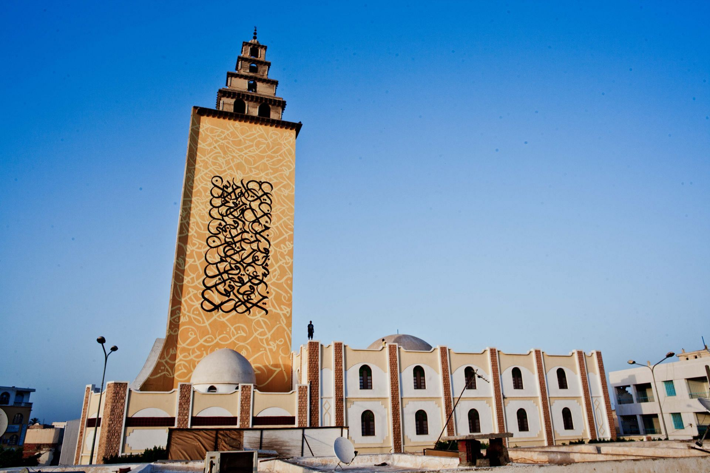

Gabes est une ville du sud-est de la tunisie.
Elle est la plus grand ville du sud tunisien aprés Sfax, Gabès est la seule oasis littorale de Méditerranée, entourée de plages de sable fin. Sa vaste palmeraie est un véritable enchantement, et sa vieille ville se distingue par son atmosphère authentique. Mais Gabès est surtout la porte d’entrée vers le Sahara ; début d’un voyage entre crêtes, tentes bédouines et vieux villages berbères. On y découvre des traditions vivantes et des modes de vie ancestraux, comme l’étonnant village troglodyte du mont Matmata.
Cette vaste oasis est l'emplacement d'une agriculture intensive de palmiers-dattiers, d'arbres fruitiers (avec notamment la culture du grenadier) et de cultures maraîchères et fourragères. C'est également un espace touristique si l'on considère les promenades organisées en calèche à travers l'oasis. il y a aussi un petit zoo offre un lieu de visite étonnant
A Gabès commence l’aventure du tourisme saharies Dans les villages des environs, vous apprendrez à connaître les habitations troglodytes .Vous vous initierez à la culture berbère : le petit musée de Tamezret vous en racontera les symboles, les traditions et l’histoire de la reine berbère. La région, vallonnée, se prête bien à la randonnée à pied.
Le marché de Jara, à Gabès, est l’endroit où se vendent toutes les spécialités d’artisanat de la région. Vous y trouverez toutes sortes d’objets en alfa tressé : couffins, chapeau de soleil… Vous dénicherez aussi des chaussures brodées et de magnifiques mergoums (tapis ras) du Sud tunisien, aux couleurs chaudes et aux motifs géométriques berbères. Pour colorer vos cheveux d’éclats cuivrés, le henné est une spécialité de Gabès réputée pour son excellente qualité.
On peut trouver beaucoup des belles choses au Manzel, comme le centre-ville, qui est Ain al-Salam; qui était dans les temps anciens une source jaillissant d'eau claire.
Il existe également de nombreuses ruelles qui se distinguent par leur petitesse, leur propreté et leurs belles couleurs. On retrouve également la Grande Mosquée de el-manzel; qui est un lieu de culte où se rassemblent les musulmans pour les prières communes. Il s'agit du type de monument cultuel le plus caractéristique de l'islam.
Abu-Lubabah était un compagnon des Ansar et il y a un Makame(le Makame de sidiboulbaba ) là où se trouve son sanctuaire. Les gens viennent de partout pour lui rendre visite et prier dans son sanctuaire sacré.
| arij | arij |
| mariam |  |
| ayhem | ayhem |
| saif | saif |
| saif | saif |